Corretto o scarto
Stazioni di collaudo su misura per le linee di produzione, con hardware e software nostri. Dal 1973, oggi a Mestrino.
Mod. 1294/P, stazione da banco
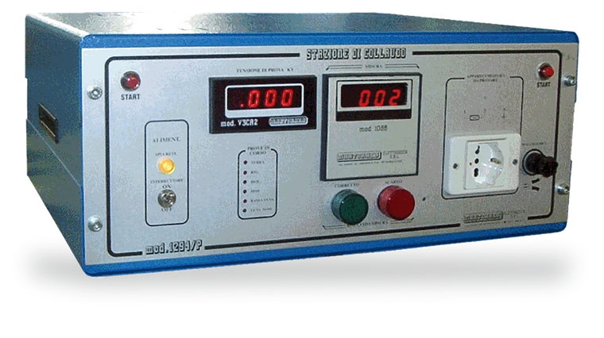
Corretto ScartoConcetti così lungimiranti che per molti versi sono ancora validi
Siamo specializzati in stazioni di collaudo su misura, studiate per velocizzare la produzione. Hardware e software li progetta il nostro reparto di ricerca e sviluppo.
- 1973
- L'azienda nasce, fondata dall'ing. Vincenzo Martorana
- CEI, VDE, EN, UL
- Le normative secondo cui le stazioni fanno le prove
- Italia ed estero
- Stazioni in Europa, Sud America, Africa e Asia
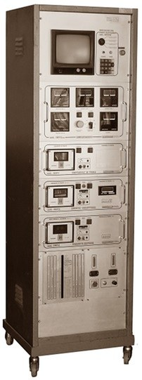
Otto prove, un esito
Il Mod. 1200 le fa tutte in una sola stazione e a fine collaudo decreta l'esito. Toccate una prova per vedere cosa misura e quali stazioni la fanno.
-
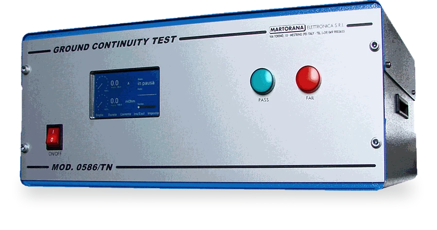
Continuità di terra
Verifica che le parti metalliche accessibili siano collegate al conduttore di protezione e misura la resistenza del circuito di terra.
La fannoMod. 1200, modulo 0586_TN
-
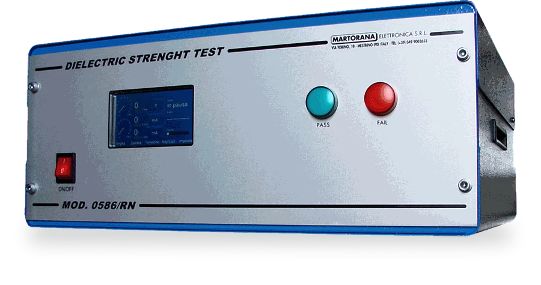
Rigidità dielettrica
Applica un'alta tensione tra le parti attive e la carcassa e controlla che l'isolamento regga senza scariche.
La fannoMod. 1200, modulo 0586_RN
-
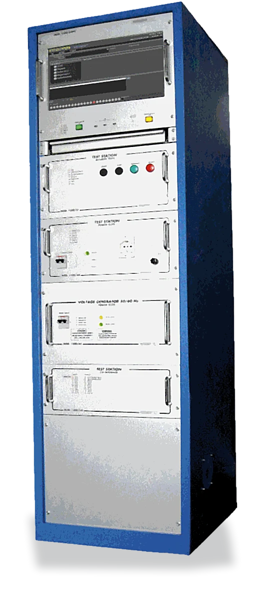
Isolamento elettrico
Misura la resistenza d'isolamento tra il circuito di alimentazione e le parti che si possono toccare.
La faMod. 1200, nella foto la versione Inverter
-
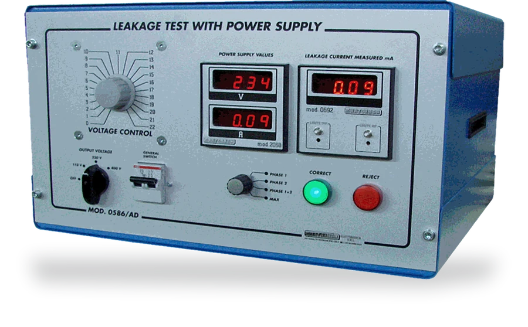
Dispersione
Misura la corrente che passa verso terra con l'apparecchio acceso alla tensione di alimentazione.
La fannoMod. 1200, modulo 0586_AD
-
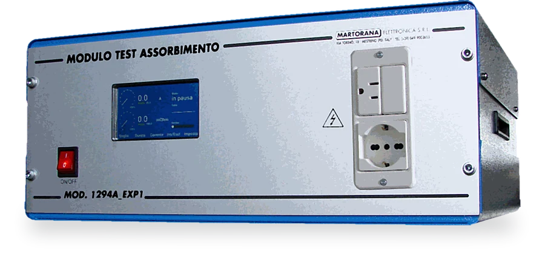
Assorbimento elettrico
Misura quanto assorbe l'apparecchio in funzione, in monofase, bifase e trifase.
La fannoMod. 1200; modulo M1294A_EXP1 a 115 e 230 Vac e in corrente continua
-
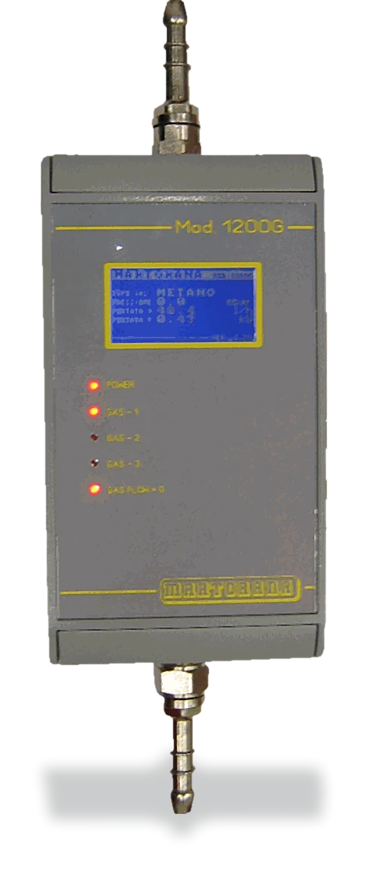
Pressione e portata del gas
Collauda in linea i piani di cottura a gas, con la correzione automatica della portata in funzione della pressione.
La fannoMod. 1200; Mod. 1200G, fino a 70 mbar e 1200 l/h d'aria
-
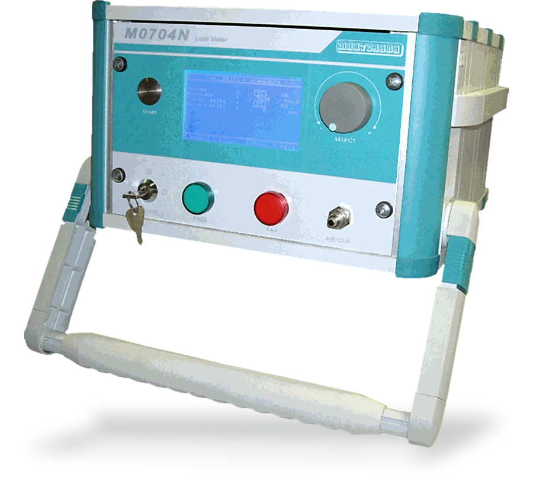
Tenuta e microperdite
Rileva le perdite dei circuiti idraulici prima che il prodotto lasci la linea.
La fannoMod. 1200; M0704N, perdita fino a 396 cc/h con precisione dello 0,1 %FS
-
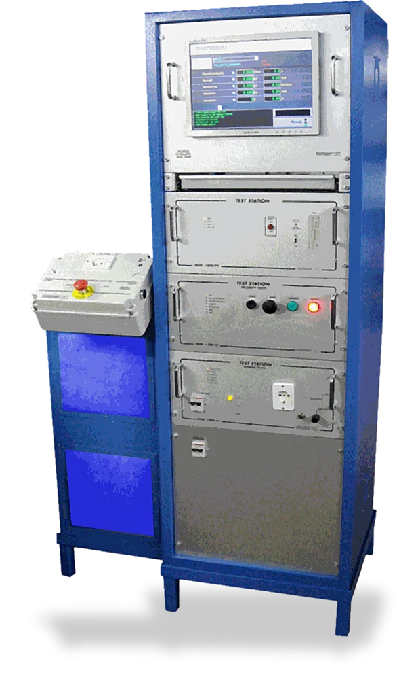
Interruttore differenziale
Verifica che il differenziale dell'apparecchio intervenga come deve.
La faMod. 1200, nella foto la versione Climatizzata
CorrettoScarto
Quattro famiglie di prova
Stazioni computerizzate per chi produce elettrodomestici, piani cottura, saldatrici e apparecchi illuminanti.
Sicurezza elettrica
Mod. 1200, Mod. 1000, serie /NET, Mod. 1294A
Dal Mod. 1200 personalizzabile al Mod. 1294A compatto, tutto in uno. Con l'inverter, prove a 120, 240 e 208 V a 60 Hz.
Tenuta e portata
Mod. 1200G, M0704N
Collaudo in linea dei piani di cottura a gas e della tenuta dei circuiti idraulici.
Saldatrici
Mod. 1200DB, 1200rs, 0586, 0103, 200
Saldatrici a Tig, Mig, plasma e inverter, trascinatori e caricabatterie.
Apparecchi illuminanti
M0524-LED, Mod. 1294A
DALI, DALI2, DMX512, 0-10 V e 1-10 V. La M0524-LED è nata con i principali produttori del settore.
Anche su misura
Apparecchiature speciali
Prova surge per il filo smaltato, impianti refrigeranti con alimentatori fino a 65 kVA, simulatori guasti, basi pneumatiche porta pezzo.
Alimentatori da 0,5 a 100 kVA
Alimentatori e stabilizzatori, dai regolatori manuali agli inverter da 15 e 60 kVA, anche in versione doppia.
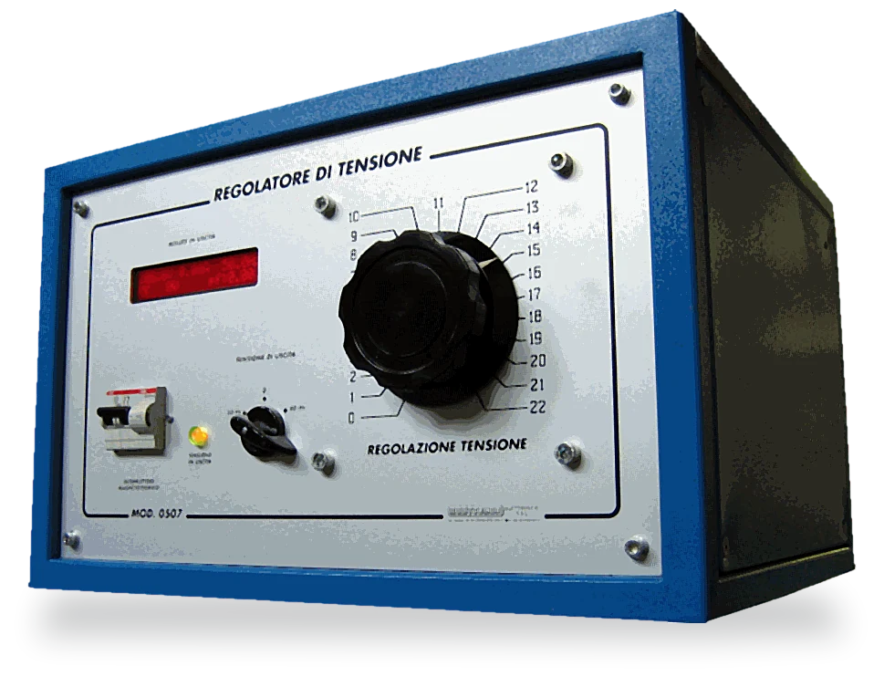
Il software lo scriviamo noi
- Iridium
Pensato e sviluppato da noi: ogni prova si chiude con un colore.
BuonoNon rilevatoScarto
- MccDotNet Multibaia
Più collaudi in parallelo, con un servizio REST integrato.
- Assistenza remota
Assistenza a distanza sulle stazioni installate.
Al primo posto, le specifiche del cliente
049 9003655 martorana@martoranaelettronica.com Via Torino 10/B, 35035 Mestrino (PD) Per una stazione nuova, mandateci il prodotto da provare.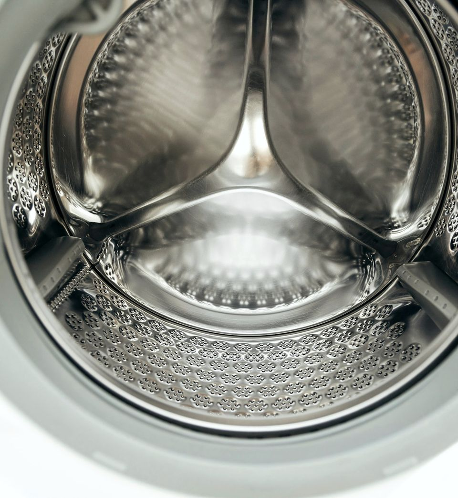